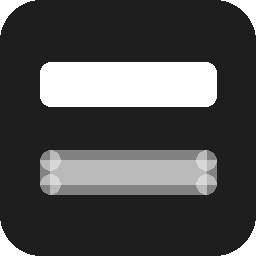

Lightweight Announcement Bar
In WordPress.org reviewA fast, cache-safe announcement bar for the top or bottom of your site. Built specifically against what competing bar plugins get criticised for — dashboard advertisements, deactivation surveys, and CTA buttons that redirect somewhere you didn't choose.
No dashboard ads
No telemetry
No server-side cookies
Honest CTA links
More plugins in the pipeline — check back soon.